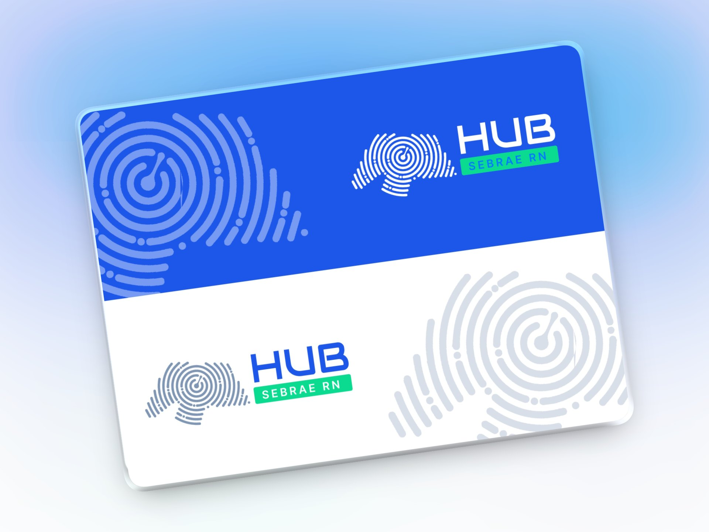

01
Brand direction
An identity of its own, connected to Sebrae
The identity was designed for digital from the start. The goal was to create a brand with its own personality, yet still recognizable as part of the Sebrae ecosystem.
The concept
Individuality + territory + closeness
The symbol combines a fingerprint with the outline of Rio Grande do Norte.
The fingerprint stands for the uniqueness of each business, while the territory reinforces the local, close nature of the service.
